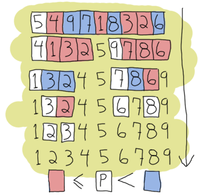

递归
你好 递归!

那些熟悉命令式和面向对象编程语言的读者会想，我们到现在为止为什么还没有介绍循环体。
对这个问题的回答是“什么是循环？”，在函数类编程语言中通常不提供for和while这种循环控制体。
取而代之的，函数类编程语言使用递归这一概念。
我想你还记得在入门那章中是如何介绍不变的变量。
如果你不记得了，可以再 回顾一下！
递归同样可以记住数学概念和函数来解释。
一个基本的数学函数，如值的阶乘解释递归函数的一个非常好的例子。
一个数n的阶乘可以产生一个序列 1 x 2 x 3 x ... x n，
或反向的序列n x (n-1) x (n-2) x ... x 1。
我们举一个实例， 3的阶乘是3! = 3 x 2 x 1 = 6。
4的阶乘将是 4! = 4 x 3 x 2 x 1 = 24。
这样的函数可以被用下面的数语言来描述：

这个告诉我们，如果值n等于0时，我们将返回结果1。
如果值大于0，我们将返回n乘以n-1的阶乘，直到n为1为止：
4! = 4 x 3! 4! = 4 x 3 x 2! 4! = 4 x 3 x 2 x 1! 4! = 4 x 3 x 2 x 1 x 1
那我们如何将这些数学语言翻译为Erlang？
这个过程非常简单。
我们可以看下这些数学符号：
n!,1和n((n-1)!)还有if。
我们可以得到一个函数名(n!)，哨位(the if)和函数体(1和n((n-1)!))。
由于语法的限制的原因，我们将n!重命名为fac(N)：
-module(recursive). -export([fac/1]). fac(N) when N == 0 -> 1; fac(N) when N > 0 -> N*fac(N-1).
这个阶乘函数就算完成了！ 这个函数和数学定义非常相似。 如果我们使用模式匹配，会让我们的函数定义更简单一些：
fac(0) -> 1; fac(N) when N > 0 -> N*fac(N-1).
所以对那些本身就是递归的数学定义，我们可以很容易且很快的翻译到Erlang中。 并且我们处在循环中！简单的说递归，我们可以定义为“一个不断调用自己的函数”。 因为我们无限的循环，我们需要一个终止条件（真正的术语叫基本条件）。 在这个案例中，终止条件时当n等于0。 此时此刻，我们可以停止调用函数自身且停止执行了。
长度函数
让我们在多做一些实践。 我们将实现一个计算列表中元素数量的函数。 所以在一开始我们就知道我应需要什么：
- 一个基本情况；
- 一个调用自身的函数；
- 一个用于测试我们函数的列表。
写过很多递归函数后，我发现基本情况是最容易先写出来的：
什么样的最简单的输入是我们最容易计算长度的？
当然是空列表，因为它的长度为0。
所以我们在处理长度的时候我们可以这样记下 [] = 0。
剩下的最简单的情况是列表只有1个元素：[_] = 1。
这听起来似乎足以让我们定义我们的基本情况。
我们可以将这些加入我们的代码中：
len([]) -> 0; len([_]) -> 1.
非常好！我们可以计算列表的长度，给出的长度为0或1！这非常有用。
当然，也没地方可以使用它，因为它还不是递归函数，下面将是比较复杂的部分了：
扩展我们的函数，让它能递归，并计算超过长度超过1和0的列表。
我们早先提到的
列表是递归定义的[1 | [2| ... [n | []]]]。
由于长度为1的列表我们可以定义为[X|[]]，长度为2的列表我们可以定义为[X|[Y|[]]]，
我们就可以使用[H|T]这个模式匹配去匹配包含1个元素或多于1个元素的列表。
请注意，第二个元素它本身也是个列表。
这代表，我们只需要计算第一个元素然后用第二个元素做为参数调用自身。
我们可以认为每个列表中的元素长度为1，那么我们可以将函数这样重写下：
len([]) -> 0; len([_|T]) -> 1 + len(T).
现在，我们得到了字节计算列表长度的递归函数。
让我们看看len/1是如何执行的，我们用[1,2,3,4]这个列表来测试这个函数：
len([1,2,3,4]) = len([1 | [2,3,4])
= 1 + len([2 | [3,4]])
= 1 + 1 + len([3 | [4]])
= 1 + 1 + 1 + len([4 | []])
= 1 + 1 + 1 + 1 + len([])
= 1 + 1 + 1 + 1 + 0
= 1 + 1 + 1 + 1
= 1 + 1 + 2
= 1 + 3
= 4
我们得到了一个正确的结果。 恭喜你，你成功的写出了第一个可用的Erlang递归函数！

尾递归长度函数
你可能已经发现，包含4个元素的列表，我们将我们函数展开了10次。 尽管这个在短列表上表现的非常豪，但是当一个列表包含数百万项时，这就成问题了。 你当然不想为了这么简单的函数在内存中保存数百万的数字。 这很浪费并且这还有一个更好的方式。让我们开始使用尾递归
尾递归是一种变换上述线性过程（一个随着元素数量增多而增长的过程）到一个迭代过程（没有任何实际增长）。
一个函数要成为尾递归函数，他需要‘无副作用’。
让我来解释下吧：是什么让我们的以前的函数调用不断增长，是第一调用的结果依赖于第二次对函数的调用。
要获得1 + len(Rest)的结果，就需要len(Rest)的结果。
len(Rest)函数本身，还需要另一次函数调用的结果。
这些都会用堆栈堆叠起来，直到只剩下最后一个元素并且只有最后一个元素的结果被计算出来才会结束。
尾递归函数的目标就是为了消除这种堆栈的堆叠。
为了达到这个目的，我们需要在我们的函数中增加一个额外的临时变量。 我借助阶乘函数说明了递归函数的概念，但这次我们将它定义为尾递归。 我刚刚描述的临时的变量很多时候被称为累加器,它起到了限制我们调用的增长的作用， 同时为我们提供了结果存储的地方：
tail_fac(N) -> tail_fac(N,1). tail_fac(0,Acc) -> Acc; tail_fac(N,Acc) when N > 0 -> tail_fac(N-1,N*Acc).
此处，我们定义了tail_fac/1和tail_fac/2.
这样做的原因是，Erlang不允许函数中使用默认参数（不同的参数个数意味着不同的功能），但是我们可以人工这么做。
在特殊的情况下，tail_fac/1可以充当尾递归函数tail_fac/2的抽象。
tail_fac/2隐藏的累加器细节不会影响任何人，所以我们可以从我们的模块中只导出tail_fac/1。
当执行这个函数，我们可以这样展开：
tail_fac(4) = tail_fac(4,1) tail_fac(4,1) = tail_fac(4-1, 4*1) tail_fac(3,4) = tail_fac(3-1, 3*4) tail_fac(2,12) = tail_fac(2-1, 2*12) tail_fac(1,24) = tail_fac(1-1, 1*24) tail_fac(0,24) = 24
我们可以看到不同？ 现在我们不会同时在内存中保存两个以上的变量： 因此我们内存使用是固定的。 即便计算1百万的阶乘和计算4的阶乘将会消耗相同的空间（在这个场景下，以至于我们忘记了4！是一个远小于1M!的数字）。
看到你面前的这个尾递归阶乘函数的例子，你也许看到了怎么将这个模式应用在我们的len/1函数上。
所有我们需要做的就是让我们的递归函数‘无副作用’。
如果你想看例子，你可以想像通过添加一个参数将+1这段代码放在你的函数调用中：
len([]) -> 0; len([_|T]) -> 1 + len(T).
变成：
tail_len(L) -> tail_len(L,0). tail_len([], Acc) -> Acc; tail_len([_|T], Acc) -> tail_len(T,Acc+1).
现在你编写的长度函数就是尾递归的了。
更多的尾递归函数

我们会在写几个这样的递归函数，让我们逐渐熟悉这个东西。 毕竟，递归是Erlang中仅有的循环体（除了列表解构),所以它是必须要牢记的原则之一。 这对你将来学习其它计算机语言也非常有用，所以请记住这个！
我们将要编写的第一个函数是duplicate/2。
这个函数接受一个整数作为其第一个参数，然后任何类型作为其第二个参数。
然后，它会构造一个包含指定整数个第二个参数的副本的列表。
像以前一样，先想基本情况会对你写出剩下的情况有很大的帮助。
对duplicate/2来说，要求重复0次，是最基本的状况。
在这情况下，无论第二个参数是什么，我们只需要返回一个空列表。
剩下的情况所需要的就是，不断尝试调用自身直到到达基本情况。
我们将不准许负整数，因为我们不直到该如何进行-n次复制：
duplicate(0,_) ->
[];
duplicate(N,Term) when N > 0 ->
[Term|duplicate(N-1,Term)].
一旦写出基本的递归函数，通过添加一个列表构建作为临时变量我们很容易将这个函数变成尾递归的：
tail_duplicate(N,Term) ->
tail_duplicate(N,Term,[]).
tail_duplicate(0,_,List) ->
List;
tail_duplicate(N,Term,List) when N > 0 ->
tail_duplicate(N-1, Term, [Term|List]).
非常成功！此时我想稍微改变下我们讨论的话题，让我们同时讨论下尾递归和while循环。
我们tail_duplicate/2函数包含了所有我们能在while循环中能用的代码。
让我们想像下，如果我们虚构一个有while循环且语法和Erlang相同的语言，我们用while循环完成这个函数，那么这个函数将会像这样：
function(N, Term) ->
while N > 0 ->
List = [Term|List],
N = N-1
end,
List.
请注意，函数中所有的元素都出现了在这个虚构的语言所写的函数中和Erlang写的函数中。 只是这些元素所放的位置不同了而已。 这代表正确的尾递归函数和迭代是一样的，就像一个while循环一样。
当我们分别用递归和尾递归编写一个列表反转函数reverse/1的时候，我们比较这两种方式的时候会‘发现’，
这里面还有另一个有趣的特性。对于这个函数，最基本的状况就是空列表，此时我们没有任何东西需要反转。
我们只要返回一个空列表就可以了。
其它的可能情况都应当尝试通过调用自身，直到最基本的情况上，就像duplicate/2函数那样。
我们的函数将通过模式匹配[H|T]来遍历整个列表然后将H放到剩余列表的后面：
reverse([]) -> []; reverse([H|T]) -> reverse(T)++[H].
在非常长的列表上,这将是一个可怕的噩梦: 不但这会让所有的列表增加操作入栈,同时我们需要回朔整个列表中所有的列表增加操作,知道我们列表最后的一个元素! 对于那些喜欢视觉效果的读者,我们可以看下下面的代码例子:
reverse([1,2,3,4]) = [4]++[3]++[2]++[1]
↑ ↵
= [4,3]++[2]++[1]
↑ ↑ ↵
= [4,3,2]++[1]
↑ ↑ ↑ ↵
= [4,3,2,1]
这时候就需要使用尾递归来解决这个问题了。 因为我们将使用一个累加器这样可以每次向里面增加头, 我们的列表将被自动翻转让我们先看看它是如何实现的:
tail_reverse(L) -> tail_reverse(L,[]). tail_reverse([],Acc) -> Acc; tail_reverse([H|T],Acc) -> tail_reverse(T, [H|Acc]).
如果我们像上一个版本那样逐层展开，我们会得到：
tail_reverse([1,2,3,4]) = tail_reverse([2,3,4], [1])
= tail_reverse([3,4], [2,1])
= tail_reverse([4], [3,2,1])
= tail_reverse([], [4,3,2,1])
= [4,3,2,1]
从这里我们可以看出来，我们现在是线性的遍历列表： 我们不单单避免了操作的入栈操作，我们更有效的完成了我们的操作！
另一个我们将要实现的函数是 sublist/2,
一个接收一个列表L和一个整形N,
然后返回列表中前N个元素。
举个列子，sublist([1,2,3,4,5,6],3)将会返回[1,2,3]。
再次，这个基础情况是我们尝试从一个列表中取前N个元素。
但是请注意，因为sublist/2还是和前面的函数有些不同的。
这个函数还有第二个基础情况，就是当列表为空的情况！
如果你不检查列表是否为空，当你调用recursive:sublist([1],2).会出现错误，
此时我们希望获得[1]这个结果。
一旦我们定义好了这些，剩下函数的递归部分只是遍历整个列表，
就这样我们只要遍历整个列表，直到我们调用到两个基本状况中的之一：
sublist(_,0) -> []; sublist([],_) -> []; sublist([H|T],N) when N > 0 -> [H|sublist(T,N-1)].
我们同样可以将这个函数像以前那样转换成尾递归：
tail_sublist(L, N) -> tail_sublist(L, N, []).
tail_sublist(_, 0, SubList) -> SubList;
tail_sublist([], _, SubList) -> SubList;
tail_sublist([H|T], N, SubList) when N > 0 ->
tail_sublist(T, N-1, [H|SubList]).
这个函数是有瑕疵。
一个非常严重的瑕疵！我们使用列表当累加器的时候，
这个累加器会和我们在翻转函数中的效果一样。
如果你编译并执行这个函数sublist([1,2,3,4,5,6],3)，你会发现
返回的是[3,2,1]而非[1,2,3]。
我们唯一能做的就是将这个结果进行一次翻转。
只要将tail_sublist/2改成下面的这个样子，剩下的逻辑保持不变：
tail_sublist(L, N) -> reverse(tail_sublist(L, N, [])).
最终结果将会是正确的排序。 从某种意义上来说，在尾递归后再进行翻转是浪费时间的，但是你只说对了一部分（我们还是节省了很多内存的）。 在比较短的列表上，因为上面那个原因， 你也许会看到你的普通递归的代码运行的速度比尾递归的代码速度要快，但是随着数据量的增长， 翻转列表消耗的时间相对分割列表消耗的时间还是少。
注意：
你应当使用lists:reverse/1代替你自己编写的reverse/1函数。
因为它经常被用于尾递归中，所以Erlang的开发者和维护者，将这个函数作为BIF实现了。
你可以快速的进行列表翻转（我们应该感谢这些用C实现的函数），这样我们会让列表翻转的劣势不那么明显。
本节中剩下的代码还会使用我们自己的翻转函数，但是再这之后你应当使用lists:reverse/1，
而不是我们自己的版本。
让我们走的更远一些吧，我们来写一个zip/2函数。
这个函数将接受两个列表当作参数，并将他们联合起来作为每个元组包含两个元素的列表。
我们自己的zip/2函数将像下面这样：
1> recursive:zip([a,b,c],[1,2,3]).
[{a,1},{b,2},{c,3}]
我们希望两个参数的长度是相同的， 所以最基本的情况是我们的参数是两个空列表：
zip([],[]) -> [];
zip([X|Xs],[Y|Ys]) -> [{X,Y}|zip(Xs,Ys)].
但是，如果你想把条件放的宽松些， 例如你决定两个列表中任何一个列表为空时便结束。 在这个场景下，你会有两个基本情况：
lenient_zip([],_) -> [];
lenient_zip(_,[]) -> [];
lenient_zip([X|Xs],[Y|Ys]) -> [{X,Y}|lenient_zip(Xs,Ys)].
不过请注意，无论哪种基本情况，
函数的递归部分都是一样的。
我强烈建议你尝试写下这两个函数zip/2和lenient_zip/2，
从而确定你确实明白了怎么写尾递归函数：
它们将是很多大型应用的核心概念，因为这些应用的主循环都是这么做的。
如果你想检查下你的答案，
可以看下我的实现 recursive.erl，
其中包含的不仅仅是tail_zip/2和tail_lenient_zip/3函数。
注意： 我们这里看到尾递归并没有让内存增长，是因为当虚拟机看到某个函数在函数的最后 调用了自己（函数中最后一条语句），它会消除当前的栈帧。 这个被成为尾调用优化(TCO)并且它是更通用优化技术最后调用优化(LCO)的特例。
只要函数最后一句是调用其它函数，LCO都会被用来进行优化。
当这发生了，像TCO优化一样，Erlang虚拟机全力的避免堆栈的增长。
举个例子，函数链a() -> b(). b() -> c(). c() -> a().
将会高效的无限循环下去，因为LCO的优化这不会产生堆栈溢出而造成内存耗尽。
基于这个原则，配合累加器的使用让尾递归真正的有用。
快，排序！
我想现在你对递归和尾递归有一定的感觉了，但是为了更好的让你理解这些， 我们将写以一个更复杂的例子，快速排序。 是的，传统来说“嘿，看我能写更短的函数”，这是个经典的例子。 一个简单的快排一般都是取列表的第一个元素作为中枢 然后将所有的小于等于中枢的元素放入新的列表中，剩下的大于中枢的元素放在另一个列表中。 我们将会在两个列表中做相同的事情，直到每个列表越来越短。 直到我们得到空列表为止，这就是我们的基本情况。 这个版本的实现之所以说是比较简单的，是因为更好的快排版本会选择更好的中枢， 从而能更快一些。实际上，我们并不是很关心我们这个例子是否是更好的。
我们需要两个函数来完成这件事情： 第一个函数完成列表的分割，将列表分割成较小的一部分和较大的一部分 ，第二个函数是不断在生成的部分上调用第一个函数，并将最终结果整合到一起。 首先我们要写合并函数：
quicksort([]) -> [];
quicksort([Pivot|Rest]) ->
{Smaller, Larger} = partition(Pivot,Rest,[],[]),
quicksort(Smaller) ++ [Pivot] ++ quicksort(Larger).
上面的函数向我们展示了基本的情况，列表已经被另一个函数分成了较大的部分和较小的部分 ，其中中枢的作用就是将两个已经通过快速排序的列表分别放在它前面和后面。 所以这个需要关注如何合并。现在我们需要编写分区函数：
partition(_,[], Smaller, Larger) -> {Smaller, Larger};
partition(Pivot, [H|T], Smaller, Larger) ->
if H =< Pivot -> partition(Pivot, T, [H|Smaller], Larger);
H > Pivot -> partition(Pivot, T, Smaller, [H|Larger])
end.
现在你就可以执行你自己的快速排序函数了。
如果你以前在网络上看过Erlang的代码事例，
你也许可能看到另一个版本的快排实现，但是它使用了列表推导式。
其中最容易替换的部分是创建新列表的部分，partition/4函数：
lc_quicksort([]) -> [];
lc_quicksort([Pivot|Rest]) ->
lc_quicksort([Smaller || Smaller <- Rest, Smaller =< Pivot])
++ [Pivot] ++
lc_quicksort([Larger || Larger <- Rest, Larger > Pivot]).
这两个版本最大不同是，这个版本的快排更容易阅读，
但是等同的，它需要翻转列表两次来将他们分割成两部分。
这是一个代码整洁和性能的抉择，但是真正的失败者是你，因为函数lists:sort/1
已经存在。你应当使用现有的函数，而不是自己写。
不要盲从：
所有这些代码都是处于教育目的，但是性能并不好。
好多函数语言的教程从来没有提及这些！
首先，这里所有的实现，都需要处理等于中枢的值多于一次。
我们可以返回三个列表：较小的元素，较大的元素和等于中枢的元素，这样会更有效些。
另一个问题是，当我们将被分割的列表和中枢合并的时候，
我们翻转所有被分割的列表多于一次。
当我们将列表分割为三部分，也许能通过执行级联操作稍微减少开销
如果你对这个很感兴趣，可以参考本例子recursive.erl中的最后一个版本
(bestest_qsort/1)。
不过值得欣慰的是，所有这些快速排序函数可以作用在包含任何类型的列表上， 即使是元组和列表。去尝试他们，他们是可以工作的！
超越列表
通过阅读这章， 你也许会认为Erlang的递归主要关注列表。 当然对于递归而言，列表是作为例子最好的数据结构，但是不止这些。 为了展现递归的多样性，我们将展示如何构建二叉数，并从其中读取数据。
首先，定义什么是树是非常重要的。 在我们的例子中，所有的节点都是一直向下展开的。 节点是一个包含键和值还有其它两个节点的元组。 当然，这两个节点中，我们需要其中的节点的键比当前节点键小， 另一个节点的键要比当前节点的键大。 所以，这就是递归！树就是，一个节点包含另外的节点，另外的节点又包含了更多的节点。 但是这不会一直保持下去（我们当然没有无限的数据要保存），所以我想说，我们的节点中 同样存在空节点。
为了表示树的节点，元组是最适合的数据结构。
对于我们当前设计，我们可以将元组这样定义
{node, {Key, Value, Smaller, Larger}} （一个带有标签元组！）,
其中Smaller和Larger是另外类似的节点或者空节点（{node, nil}）。
事实上，我们并不需要比这更复杂的定义。
让我们构建最基础的树实现模块。
第一个函数，empty/0，返回一个树的空节点。
一个空节点是一个树的开始的基本节点，我们称为根：
-module(tree).
-export([empty/0, insert/3, lookup/2]).
empty() -> {node, 'nil'}.
通过使用这类函数封装所有树节点的表示，我们可以将我们的树的实现隐藏起来， 这样人们就不知道它是如何构建的。 这个模块可以包含所有的信息。如果你以后决定更改节点的表示方式， 你可以在不影响外部代码的情况下完成。
为了给树添加内容， 我们必须线理解如何回朔浏览整棵树。 我们像以前写递归一样处理这个问题，让我们先找出最基本的场景。 假设一个空树，就是一个空节点，那么我们最基本的逻辑就是一个空节点。 所以无论何时，我们找到了一个空节点，我们就可以添加新的键和值。 剩下的事情就是，需要写出代码来遍历整棵树，尝试找出空节点来存放我们的内容。
为了从根节点开始找到一个空节点， 我们必须使用Smaller和Larger节点的内容。 我们为了知道选择Larger还是Smaller，就需要不断比较新的键和当前节点键。 如果新的键比当前节点的键要小，我们就尝试在Smaller中寻找空节点， 但如果正好相反，我们则在Larger中寻找空节点。 当然这还有最后一种情况：如果我们新的键和当前节点的键相等该如何？ 我们有两个选择：让程序失败或将当前值替换成新值。 此处我们的选择是用新的值替换当前值。 将这些逻辑都放入一个函数中就是这样的：
insert(Key, Val, {node, 'nil'}) ->
{node, {Key, Val, {node, 'nil'}, {node, 'nil'}}};
insert(NewKey, NewVal, {node, {Key, Val, Smaller, Larger}}) when NewKey < Key ->
{node, {Key, Val, insert(NewKey, NewVal, Smaller), Larger}};
insert(NewKey, NewVal, {node, {Key, Val, Smaller, Larger}}) when NewKey > Key ->
{node, {Key, Val, Smaller, insert(NewKey, NewVal, Larger)}};
insert(Key, Val, {node, {Key, _, Smaller, Larger}}) ->
{node, {Key, Val, Smaller, Larger}}.
请注意，这个函数会返回一个全新的树。 这就是一般函数式语言只有一次赋值。 虽然这看起来是很低效率， 不过大多数情况下两个版本的树，下层结构是相同的， 所以她们完全是共享的，当需要的时候VM会进行复制。
在这个树实现的例子中，剩下我们需要做的就是创建一个lookup/2函数，
该函数可以让你通过一个键在树中找出对应的值。
其中的逻辑和我们向树中添加新内容的逻辑非常像：
我们遍历节点，检查给定键和某个节点的键是否相同，或比当前节点大还是小。
我们会有两个基本场景：一个是当节点是空（键一定不会在树中）另一个是该键被找到。
因为我们不希望当我们找一个键不存在的时候，我们的程序就崩溃，我们将在键不存在的时候
返回原子'undefined'。否则，我们将会返回{ok, Value}。
我们之所以这么做是有原因的，如果我们只返回Value，并且一个节点的值正好是
原子'undefined'，我们将没办法知道，查找这个树返回的是正确的结果，还是查找失败了。
通过将成功的结果用元组进行包装，我们很容易就能区分这两种情况。
下面是这个函数的具体实现：
lookup(_, {node, 'nil'}) ->
undefined;
lookup(Key, {node, {Key, Val, _, _}}) ->
{ok, Val};
lookup(Key, {node, {NodeKey, _, Smaller, _}}) when Key < NodeKey ->
lookup(Key, Smaller);
lookup(Key, {node, {_, _, _, Larger}}) ->
lookup(Key, Larger).
好了我们完成了。 让我通过建立一个小的电子邮件地址簿来测试它吧。 让我们开启个shell并编译这个文件吧：
1> T1 = tree:insert("Jim Woodland", "jim.woodland@gmail.com", tree:empty()).
{node,{"Jim Woodland","jim.woodland@gmail.com",
{node,nil},
{node,nil}}}
2> T2 = tree:insert("Mark Anderson", "i.am.a@hotmail.com", T1).
{node,{"Jim Woodland","jim.woodland@gmail.com",
{node,nil},
{node,{"Mark Anderson","i.am.a@hotmail.com",
{node,nil},
{node,nil}}}}}
3> Addresses = tree:insert("Anita Bath", "abath@someuni.edu", tree:insert("Kevin Robert", "myfairy@yahoo.com", tree:insert("Wilson Longbrow", "longwil@gmail.com", T2))).
{node,{"Jim Woodland","jim.woodland@gmail.com",
{node,{"Anita Bath","abath@someuni.edu",
{node,nil},
{node,nil}}},
{node,{"Mark Anderson","i.am.a@hotmail.com",
{node,{"Kevin Robert","myfairy@yahoo.com",
{node,nil},
{node,nil}}},
{node,{"Wilson Longbrow","longwil@gmail.com",
{node,nil},
{node,nil}}}}}}}
同样，你可以用过这样来查找邮件地址簿：
4> tree:lookup("Anita Bath", Addresses).
{ok, "abath@someuni.edu"}
5> tree:lookup("Jacques Requin", Addresses).
undefined
从这个电子邮件地址簿中我们可以得到这样的结论，我们可以使用列表以外的数据结构进行递归！
注意：
我们实现的树是非常不实用的：
我们没有支持常见的操作，例如删除节点或为了查找更快而重新平衡树。
如果你对树的实现非常感兴趣，并且想深度探索下，最好的方法是学习下gb_trees
中的代码实现
(otp_src_R<version>B<revision>/lib/stdlib/src/gb_trees.erl)。
同时这也应该是你在生产中用来处理树型结构的模块，而不是重新再搞一个。
递归性思维
如果你对本章已经非常理解，你也许会发现递归性的思维是更直观的。 当我们和递归想类似的结构（一般是while语句或for语句）相比较， 递归的做法是更清晰的（“如果我们的输入是这个，就做哪个，否则就做别的”）， 而循环结构需要一步一步的逼近这个结果（“先做这个，然后再做哪个，再然后。。。，最后我们完成了”）。 这个特性在函数的匹配模式的帮助下显得非常明显。
如果你还没有掌握递归是如何工作的， 你也许需要再读下这章，这会对你有很大好处。
玩笑归玩笑，递归加之模式匹配有时是能写出简洁且容易理解的算法的最佳解决方案。 通过将问题的各个部分拆分成不同的函数，直到所有函数不能再简化了， 这样算法就变成了一堆能给出正确答案的短例程（这是一个有点类似于我们写快速排序的做法）的组合体。 这种高层次的抽象也可以用于你平日中使用的循环体， 但我认为用递归实践起来更容易。可能你的情况会有所不同。
好了，女士们，先生们，让我们进行一次讨论： 作者的自言自语
- — 好的，我想我已经理解递归了。我懂得了它的定义。 我也知道了它的数学定义，就像不变的变量一样。 我也确定你发现在某些场景下，它非常简单。那还有什么呢？
- — 它遵循一些常见的模式。找到最基本的情况，写下它们， 然后写出其它所有向基本情况不断转化的情况，这样你就得到了答案。 它将函数编写变的非常简单。
- — 是的，我已经了解了，你已经重复它很多次了。 我使用循环也可以达到同样的效果。
- — 是的，它们确实能做。这不可否认！
- — 完全正确。一件事，我不明白的是你费心编写这些非尾递归版本， 即便它们不如尾递归版本好。
- — 哦，这是为了让事情更容易掌握。 从常规的美观且简单的递归版本改写到在理论上有效的尾递归版本， 这听起来是一个不错的方法去展示所有可能性。
- — 好的，我明白了，它们除了教育目没有其它作用。
- — 不完全是。在实际应用中，你会看到尾递归和正常递归调用之间的性能差别不大。
像主循环函数，这种需要无限循环的函数，是我们主要关注的领域。
这里还有一类函数，它们永远都会产生大量的堆栈，并且非常缓慢，甚至如果你不将它们写成尾递归
甚至很容易产生崩溃。
最好的例子就是 斐波那契函数，
如果不使用迭代或尾递归，就会指数级的增长。
 你应当分析你的代码（我稍后会向你介绍如何做，我保证）看看你的代码是否缓慢并修改它。
你应当分析你的代码（我稍后会向你介绍如何做，我保证）看看你的代码是否缓慢并修改它。
- — 但是循环总是迭代的，所以是没有问题的。
- — 是的，不过。。。不过。。。我美丽的Erlang。。。
- — 那么这是不是不够好？ 因为Erlang中没有'while'或'for'，所以我们要学习这些。 十分感谢你，我还是回去写我最喜欢的C吧！
- — 不要这没心急！函数语言还有其它非常有趣的地方！ 当我们写递归函数的时候，如果我们发现一些基本模式可以让我们的生活更轻松， 并且一群聪明的人发现更重要的是使用函数语言你只需写很少的递归函数。 如果你继续跟随我，我将向你展示这种抽象是如何构建的。 但是到目前为止，我们将需要更多强有力的工具。让我为你介绍高阶函数。。。